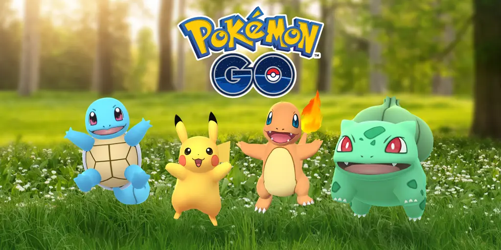

Raid bosses in/coming to rotation:
Welcome to the NSBB raid zone. This is one of several NSBB based sites to help with a few different aspects of pokemon go. This particular site being with raids. Raiding is a big part of pokemon go, and overtime more and more raid bosses have been released. Almost all of these raid bosses too have been shiny eligable, and with a 1/20 shiny rate a lot of people want to get their hands on them. Hence the raid Zone. This site is to help with raid bosses and get a better understanding for taking them down. On the left hand menu is the list of raid bosses in rotation or coming to rotation. Click one to learn more on how to take it down with info such as counters, type match ups and more. The bottom menu also has links to a few other sites such as shiny rates, server directory and the NSBB channel. Hope you enjoy it, good luck! :D 